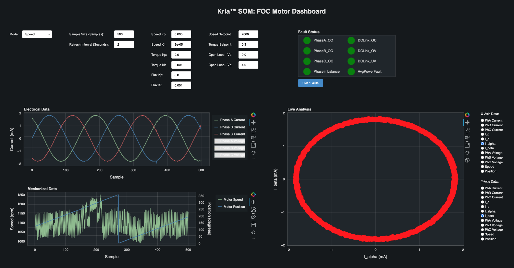

Kria™ KD240 Drives Starter Kit
|
Setting up the Board and Application Deployment |
Board Setup and Application Deployment¶
Introduction¶
This document shows how to set up the board and run the motor control application.
This guide is targeted for Ubuntu® 22.04 and AMD 2023.1 toolchain.
Pre-requisite¶
Hardware Requirements¶
KD240 Power Supply & Adapter (Included with KD240 Drives Starter Kit)
12V AC Adapter for KD240 Starter Kit and 24V AC Adapter for Motor Accessory Kit
USB-A to micro-B Cable (Included with KD240 Drives Starter Kit)
MicroSD Card (32GB card is included with KD240 Drives Starter Kit)
CAT6 Ethernet Cable
Host Machine with Display
Hardware Setup¶

Connect USB cable from host machine to J4 UART/JTAG interface on the board
Connect the Ethernet cable from J24 to your local network with DHCP enabled to install Linux packages.
Connect 12V power supply to J12 DC jack
Connect 24V power supply to J29 DC link connector
Connect encoder header pins to J42 QEI connector. Ensure J44 is in the “SE” selection.
Connect motor input to J32 3-phase inverter connector
Tested Artifacts¶
Testing was performed with the following artifacts:
KD240 platform artifacts¶
| Component | Version |
|---|---|
| Boot Firmware | K24-BootFW-01.00.bin |
| Linux Kernel | 5.15.0-9002 |
| xlnx-firmware-kd240-motor-ctrl | 0.10.1-0xlnx1 |
Please refer to the Kria Wiki to obtain latest linux image and boot firmware.
Application packages¶
| Package | Version |
|---|---|
| xlnx-app-kd240-foc-motor-ctrl | 0.3.1-0xlnx1 |
Initial Setup¶
Go through Booting Kria Starter Kit Linux to complete the minimum setup required to boot Linux before continuing with instructions in this page.
Get the latest motor control application and firmware package:
Download the firmware
Search package feed for packages compatible with KD240
ubuntu@kria:~$ sudo apt search xlnx-firmware-kd240 Sorting... Done Full Text Search... Done xlnx-firmware-kd240-bist/jammy,now 0.10-0xlnx1 arm64 [installed] FPGA firmware for Xilinx boards - kd240 bist application xlnx-firmware-kd240-motor-ctrl-qei/jammy,now 0.10-0xlnx1 arm64 [installed] FPGA firmware for Xilinx boards - kd240 motor-ctrl-qei application
Install firmware binaries
sudo apt install xlnx-firmware-kd240-motor-ctrl-qei
Install motor control application
sudo apt install xlnx-app-kd240-foc-motor-ctrl
Run the motor control application:¶
Load the firmware:
Show the list and status of available application firmware
After installing the firmware, execute xmutil listapps to verify that it is captured under the listapps function, and to have dfx-mgrd re-scan and register all accelerators in the firmware directory tree.
ubuntu@kria:~$ sudo xmutil listapps Accelerator Accel_type Base Base_type #slots(PL+AIE) Active_slot kd240-motor-ctrl-qei XRT_FLAT kd240-motor-ctrl-qei XRT_FLAT (0+0) -1Load the desired application firmware
When there’s already another accelerator/firmware loaded, unload it first, then load the kd240-foc-motor-ctrl firmware
sudo xmutil unloadapp sudo xmutil loadapp kd240-motor-ctrl-qei
Run the bokeh server:
# Run the application to launch bokeh server for the dashboard export PATH=${PATH}:/opt/xilinx/xlnx-app-kd240-foc-motor-ctrl/bin start_motor_dashboard # Enter the sudo password if required and note the ip address of the board
Sample screenshot of the terminal on launching the motor dashboard.
On the host PC:¶
Open <ip>:5006 in a web browser
Note: Once the server is running, it retains its settings no matter how many times the browser is closed, opened or refreshed.
The system is set to OFF mode/state on starting the dashboard, observe the blue LED DS10 is off
If the unit is plugged into a network with DHCP an IP will be assigned automatically. If not on a network then configure a static IP. For help on setting up static IP, see Setting up a private network
Note: The open-loop mode of motor operation is a test mode intended for users with motor control knowledge and experience. Incorrect configurations of values of Vd, Vq can cause the motor to spin at speeds higher than its rating and potentially cause excessive motor heating. Use caution when using the open-loop mode.
Dashboard¶
Dashboard Features¶
The Mode dropdown is used to select the control system mode of operation.
The Sample Size text box is used to indicate how many samples are collected and plotted on the graphs for each type of data. The samples are collected at 100 microsecond intervals. The maximum number of samples is limited to 3000 due to dashboard performance limitations. For a large number of samples, there may be a small delay before a dashboard command takes effect.
The Refresh Interval text box is used to indicate how often the dashboard plots will refresh. Note that a minimum refresh interval will be enforced based on the current sample size (a larger sample size requires a larger refresh interval).
The gain text boxes are used to adjust the proportional and integral gains of the corresponding control loop.
The Speed Setpoint text box is used to set the speed setpoint when running the motor in speed mode. The valid range of speed setpoints is -10000 to 10000 rpm.
The Torque Setpoint text box is used to set the torque setpoint when running the motor in torque mode. The valid range of torque setpoints is -2.5 to 2.5 amps.
The Open Loop - Vd text box is used to set the direct voltage (Vd). The valid range for Vd is -24 to 24 volts. Note: Normally this should be set to ~0V.
The Open Loop - Vq text box is used to set the quadrature voltage (Vq). The valid range for Vq is -24 to 24 volts.
The Fault Status indicators show if any faults have occured. When a critical fault occurs, the corresponding indicator will turn red. For a warning level faults, the corresponding indicator will turn yellow.
The Clear Faults button is used to clear all faults and put the system into Off mode.
The Electrical Data plot shows the currents and voltages for Phase A, B, and C. The voltage lines are hidden by default. The visibility of each current and voltage line can be toggled by clicking on the legend labels. The current axis is shown on the left if any current lines are visible and the voltage axis is shown on the right is any voltage lines are visible.
The Mechanical Data plot shows the speed and position of the motor. The visibility of each line can be toggled by clicking on the legend labels. The speed axis is shown on the left is speed is visible and the position axis is shown on the right if position is visible.
The Live Analysis plot shows the data that is selected for each axis using the buttons on the right.
When the dashboard is first launched, the system will be in Off mode and the dashboard will look like the image below. Observe that the electrical readings are near zero.
To run the application in Speed mode, select Speed from the Mode dropdown and use the Speed Setpoint text box to enter a speed setpoint. The image below shows the motor running in speed mode with a speed setpoint of 2000 rpm and the load disk that is included in the Motor Accessory Kit.
To run the application in Torque mode, select Torque from the Mode dropdown and use the Torque Setpoint text box to enter a torque setpoint. The image below shows the motor running in torque mode with a torque setpoint of 1 amp and the load disk that is included in the Motor Accessory Kit.
To run the application in Open Loop mode, select Open Loop from the Mode dropdown and use the Vd/Vq text boxes to set Vd/Vq. The image below shows the motor running in open loop mode with Vd set to 0, Vq set to 4 volts, and the load disk that is included in the Motor Accessory Kit.
The images below show what the dashboard looks like when a larger load is applied to the motor. As the load on the motor increases, the currents will increase and the I_alpha/I_beta circle will expand.

Next Steps¶
Go back to the KD240 FOC Motor Control application start page
Copyright© 2023 Advanced Micro Devices, Inc